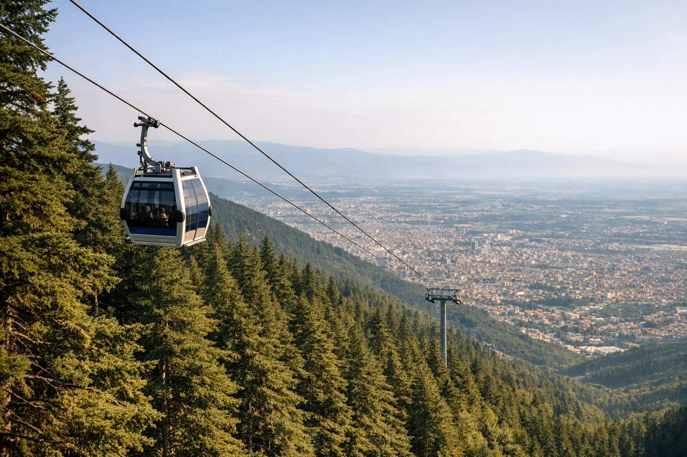
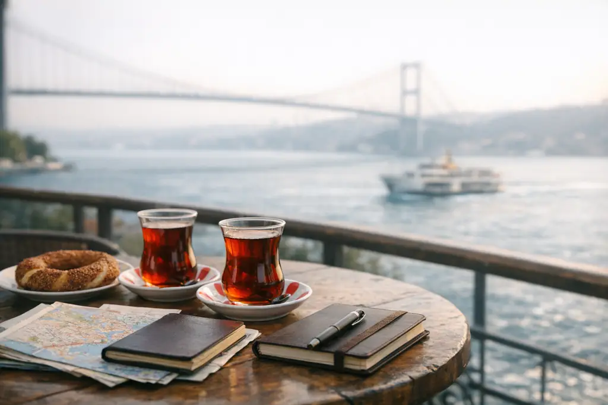

ماذا تزور في إسطنبول خلال 5 أيام؟ دليل التخطيط
خطة عملية لخمسة أيام في إسطنبول تجمع المعالم التاريخية والبوسفور ورحلة يوم إلى بورصة أو سبانجا، مع اختيار منطقة السكن ونصائح توفر الوقت والجهد.

بورصا أول عاصمة للدولة العثمانية، وتجمع في يوم واحد بين الجبل والمدينة: ثلج أولوداغ في الشتاء وغاباته في الصيف، ثم جوامع وأسواق عمرها مئات السنين.
اليوم طويل قليلاً بسبب المسافة، لذلك ننصح بالانطلاق باكراً. ومن أراد التمهل يضيف ليلة في بورصا، أو يختار برنامجاً يجمع إسطنبول وبورصا.
محطات الجولة
من أطول خطوط التلفريك في العالم، يصعد بك فوق الغابات إلى منطقة الفنادق والتزلج.
من أجمل آثار بورصا العثمانية، ببلاطهما الأخضر المميز.
شجرة دلب عمرها قرون، تجلس تحت أغصانها لشرب الشاي.
خان كوزا وأسواق بورصا القديمة للحرير والمناشف والحلويات.
كيف تعمل
واسم فندقك أو منطقتك في إسطنبول، وما تحب أن تزوره، عبر واتساب أو النموذج.
نوع السيارة والمسار المقترح وما يشمله السعر وما لا يشمله، قبل أي دفع.
نرسل لك بيانات السائق وموعد الانطلاق من فندقك.
السائق معك طوال الجولة، وفريقنا متاح على واتساب لأي تعديل.
احجز الآن
املأ النموذج وسيفتح واتساب برسالة جاهزة، ويصلك عرض مكتوب قبل أي دفع.
أسئلة وأجوبة
نحو 150 كيلومتراً عبر جسر عثمان غازي، ويستغرق الطريق ساعتين إلى ساعتين ونصف حسب الزحمة.
يتساقط الثلج عادةً بين ديسمبر ومارس، ويختلف من سنة لأخرى. أخبرنا بتاريخ رحلتك ونخبرك بحالة الجبل قبل الانطلاق.
تذاكر التلفريك والدخول غير مشمولة عادةً في سعر السيارة، ونوضّح ذلك في العرض. ويمكن أن نضيفها لك عند الطلب.
جولات يومية
من دليل أويا
خطة عملية لخمسة أيام في إسطنبول تجمع المعالم التاريخية والبوسفور ورحلة يوم إلى بورصة أو سبانجا، مع اختيار منطقة السكن ونصائح توفر الوقت والجهد.

دليل عملي لأشهر الرحلات اليومية من إسطنبول: سبانجا ومعشوقية، بورصة وأولوداغ، جزر الأميرات، شيلي وأغوا، مع جدول مقارنة ونصائح للاختيار بين رحلة اليوم والمبيت.

بدلاً من أرقام عامة لا تناسب رحلتك، نشرح لك مكونات تكلفة السفر إلى تركيا وما يرفعها ويخفضها، مع طريقة بسيطة لحساب ميزانية أسبوع ونصائح عملية للتوفير.
خدمة شخصية من البداية للنهاية
أخبرنا بوجهتك وتواريخك وعدد المسافرين، ويصلك عرض مفصّل خلال وقت قصير — بدون أي التزام.